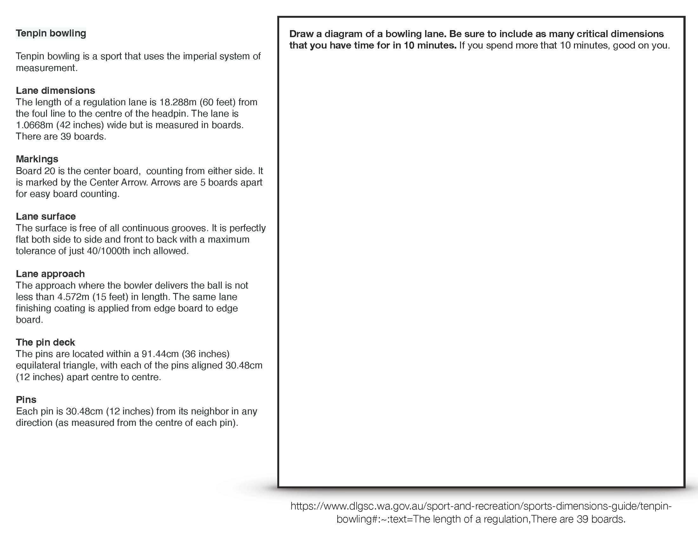
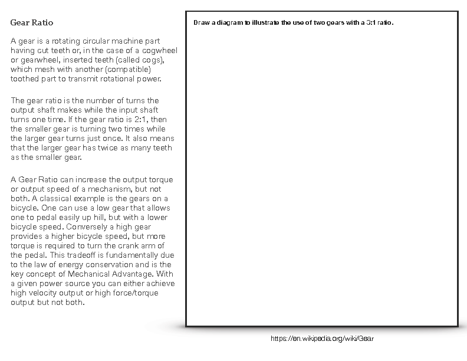
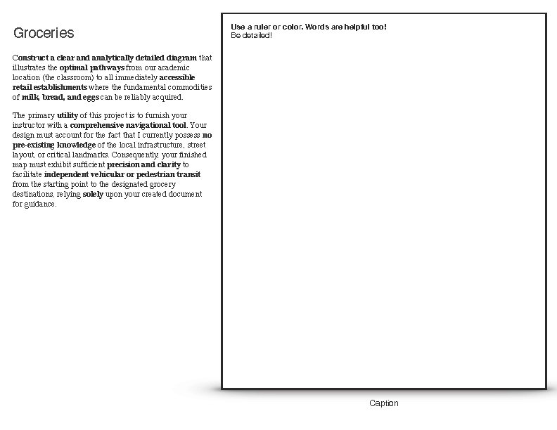
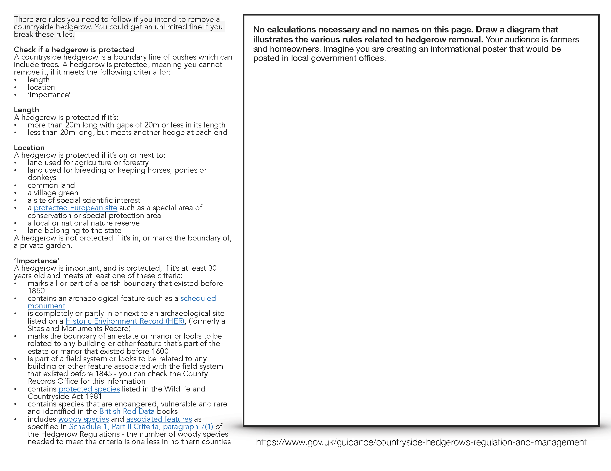
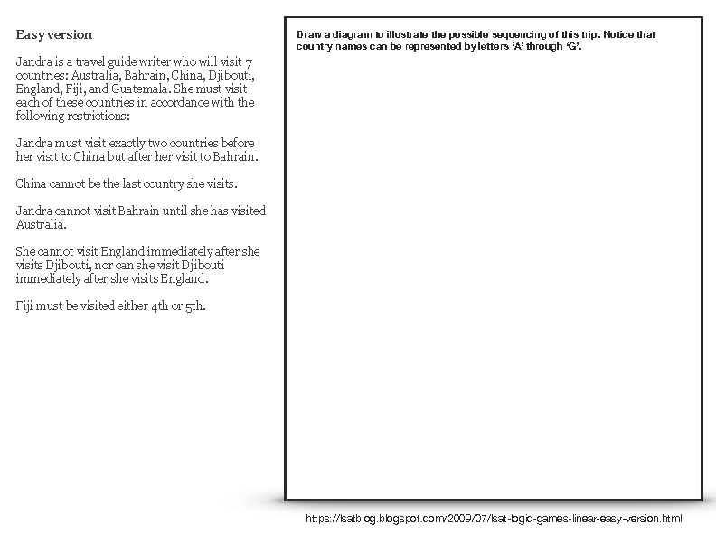
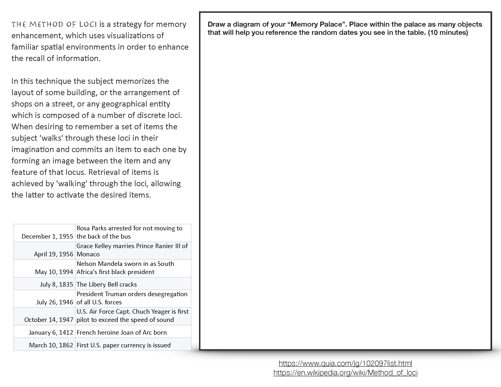
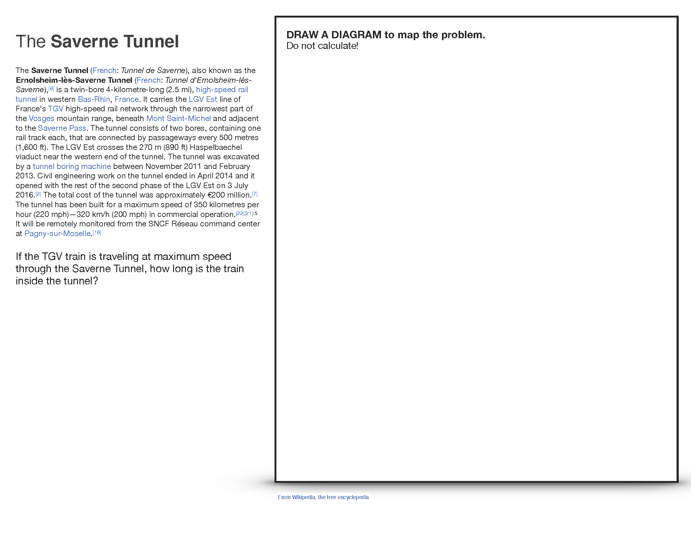

1. Block and Tackle
Download PDF

2. Bowling
Download PDF

3. Gear Ratio
Download PDF

4. Groceries
Download PDF

5. Hedge Rows
Download PDF

6. Linear Sequencing
Download PDF

7. Loci
Download PDF
8. Magicians
Download PDF

9. Saverne Tunnel
Download PDF